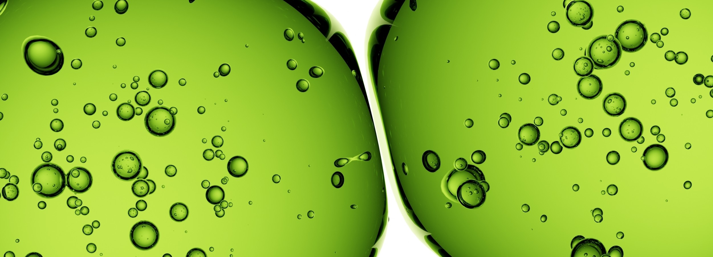
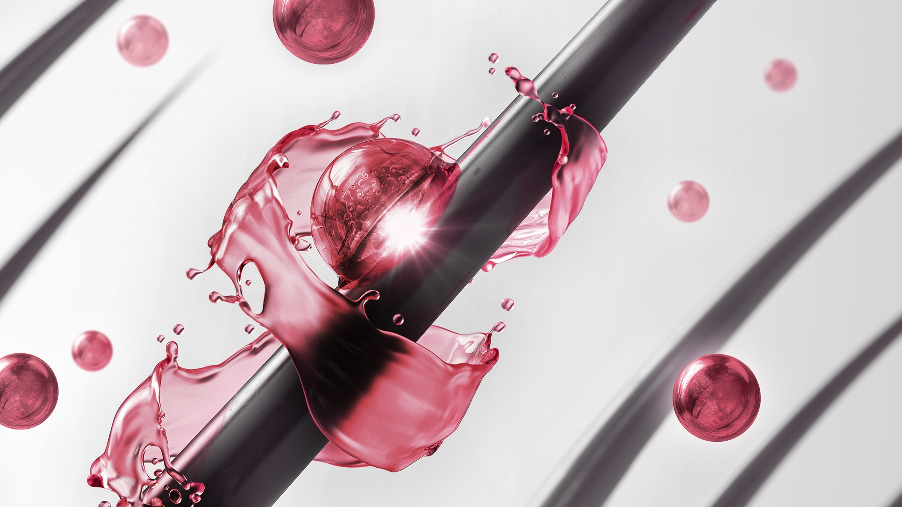
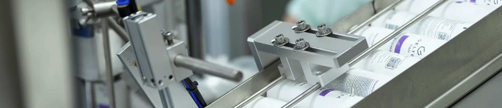
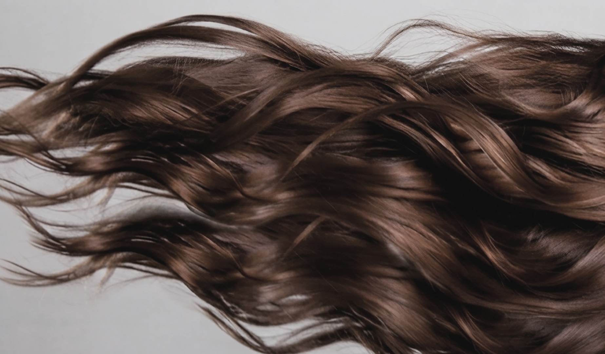

 Пептидная забота о ваших волосах
Пептидная забота о ваших волосах


Для улучшения роста
и против выпадения волос
Ингредиенты в высокой концентрации
Комплексный подход к борьбе
с поредением волос
Доказанная эффективность
в клиническом исследовании*
GELTEK HAIR. Сыворотка укрепляющая для роста волос

Женщинам
рекомендуем использовать
сыворотку при выпадении
и истончении волос
Мужчинам
при возрастном поредении и выпадении волос

Интенсивный уход
для волос, пострадавших
от стрессовых факторов,
при истощении волосяных
фолликулов, уменьшении
плотности и толщины волос

Как действует сыворотка
Пептидный комплекс
Уменьшает выпадение волос и продлевает фазу активного роста волоса.
Стимулирует рост волос за счет улучшения кровотока в коже
Растительные компоненты усиливают
действие пептидного комплекса
Экстракты периллы плодоносящей и хауттюйнии
сердцевидной оказывают противовоспалительный эффект
Экстракт зелёного чая в роли антиоксиданта предотвращает
образование перхоти
Экстракт цветков клевера и олеаноловая кислота уменьшают
воздействие андрогенов на волосяные фолликулы
Ниацинамид улучшает микроциркуляцию
и дает себорегулирующий эффект

Где купить сыворотку GELTEK HAIR
 Золотое Яблоко
Золотое Яблоко


 50 ml
100 ml
50 ml
100 ml
Улучшает качество волос.
Эффективность доказана*
в клиническом исследовании


 *Скачать исследование
*Скачать исследование
Доверие к GELTEK
Это российский производитель профессиональной и уходовой косметики с 30-летней историей. Начав с производства медицинского геля, GELTEK превратилась в крупную компанию с несколькими производствами в России, собственной лабораторией, клиникой эстетической медицины, центрами диагностики кожи в разных городах
и широким ассортиментом продуктов. Производство соответствует строгим стандартам GMP, а качество продукции гарантируется постоянным внутренним
и внешним контролем на всех этапах.


Окружите волосы
полной заботой
Шампунь нормализующий
для комфорта кожи головы
 Для ухода за кожей головы, склонной
Для ухода за кожей головы, склоннойк появлению перхоти, зуда и шелушения.
Подходит для нормальной, сухой
и склонной к жирности кожи


 30 ml
100 ml
390 ml
30 ml
100 ml
390 ml

Нажмите на изображение нужного объема, чтобы узнать больше

Шампунь укрепляющий с постбиотиками
 Для чувствительной кожи головы,
Для чувствительной кожи головы,с себорейным дерматитом и псориазом,
а также при выпадении волос


 30 ml
100 ml
250 ml
390 ml
30 ml
100 ml
250 ml
390 ml

Нажмите на изображение нужного объема, чтобы узнать больше

Для крепких
и густых волос!
Сыворотка и шампуни GELTEK HAIR
идеальны для регулярного применения
Отсутствуют противопоказания при беременности и грудном вскармливании